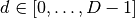
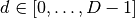

PhaseSpaceLattice¶
About the PhaseSpaceLattice class¶
The WaveBlocks Project
@author: R. Bourquin @copyright: Copyright (C) 2010, 2011, 2012, 2013, 2014, 2015, 2016 R. Bourquin @license: Modified BSD License
Inheritance diagram¶

Class documentation¶
-
class
WaveBlocksND.PhaseSpaceLattice(potential, energy, energydelta, eps, D)[source]¶ A phase space lattice centered around an energy
 and bounded by an energy delta
and bounded by an energy delta  .
.-
__init__(potential, energy, energydelta, eps, D)[source]¶ Configure a new phase space lattice centered around an energy
and bounded by an energy delta . The actual lattice points
are computed by the member function compute_lattice().Parameters: - potential (Not a
MatrixPotentialinstance but possible a (partially evaluated) member method likeevaluate_at()or any scalar valued function.) – The potential .
. - energy – The energy around which to center the lattice points.
- energydelta – The energy delta .
- eps – The semiclassical scaling parameter
 .
. - D – The dimensionality
 of position space.
of position space.
- potential (Not a
-
compute_lattice(qlimits, plimits)[source]¶ Compute the lattice points. Search for valid points an a hypercubic region of phase space given by limits for position
 and
momentum
and
momentum  .
.Parameters: - qlimits (A list of pairs of floats.) – The position limits
 and
and  for all dimensions .
for all dimensions . - plimits (A list of pairs of floats.) – The momentum limit
 and
and  for all dimensions .
for all dimensions .
- qlimits (A list of pairs of floats.) – The position limits
-
 in the lattice.
in the lattice.